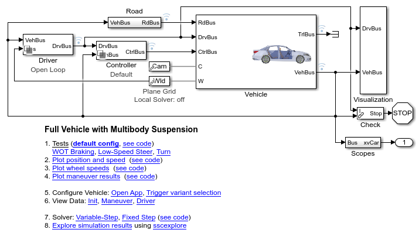
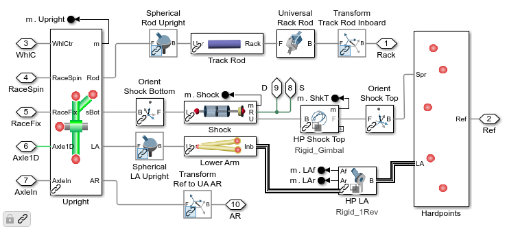
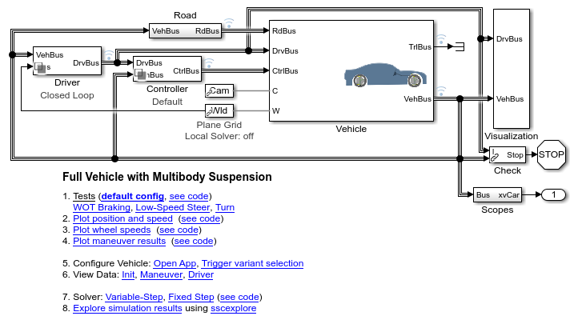
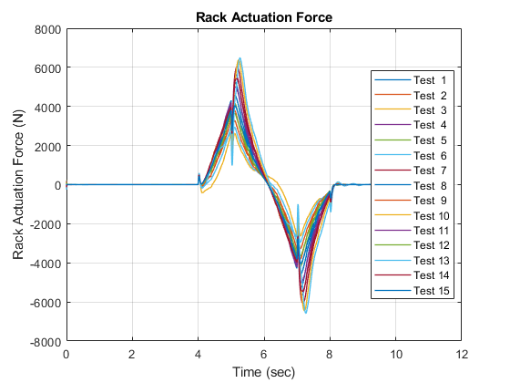
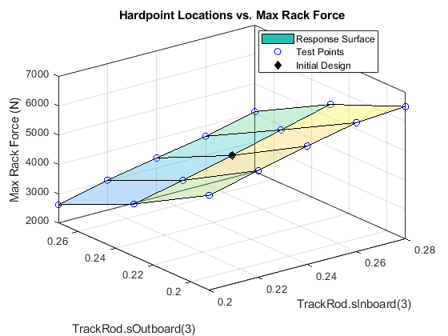
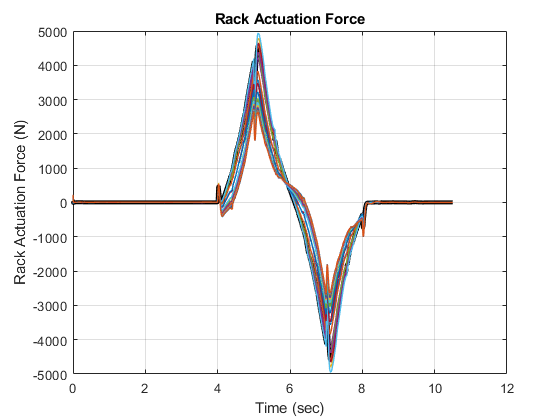
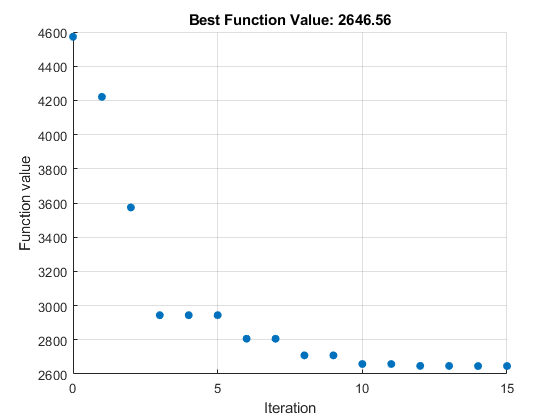
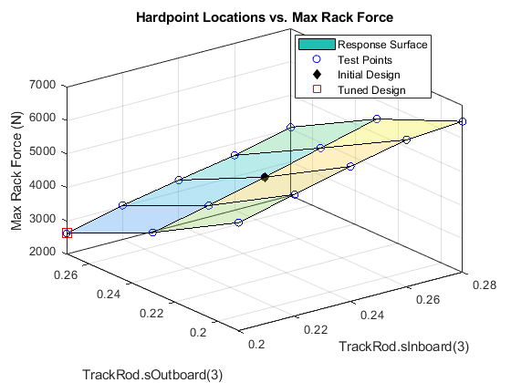

Tuning Suspension Hardpoints to Minimize Required Rack Force
This example tunes suspension hardpoints to minimize the rack force required during a parking maneuver. Using MATLAB scripts you can specify the which hardpoints (such as outboard hardpoint on the upper wishbone) and which coordinates (such as along the x, y, or z axis) should be tuned.
First a sweep is performed to explore the design space. If two coordinates are selected for tuning, a 2D plot will be shown, otherwise a table of the tested values and the resulting performance metric are shown. Next, optimization algorithms are used to find the combination that comes closest to the target value of the selected performance metric.
The documentation below shows the steps performed on sm_car.slx.
Contents
Vehicle Model
The model sm_car can be configured to test several different types of suspensions. The suspension type is selected based on field Vehicle.Chassis.SuspA1.Linkage.class.Value within a MATLAB data structure. The locations of the hardpoints are defined within that structure.
mdl = 'sm_car'; open_system(mdl) sm_car_load_vehicle_data(mdl,'218'); sm_car_config_variants(mdl);

Suspension Model
This is the structure of the suspension. The entire suspension is parameterized based on hardpoints. Those hardpoints are defined based on [x y z] locations relative to a common reference point. In the default set of data provided, that reference point is on the ground at the point midway between where the left and right tires touch the ground.
open_system('sm_car/Vehicle/Vehicle/Chassis/SuspA1/Linkage/Linkage L/MacPherson','force');

Define Sets of Values for Parameter Sweep
The portion of the design space that will be tested is defined by selecting hardpoint coordinates and a set of values for that coordinate. In this example, we vary the z-coordinate for both ends of the track rod in the steering system. MATLAB will test each combination of values for the two points and plot the result. Any number of coordinates can be used for the sweep, we limited it to two in the example so that we could plot the results as a surface.
% Settings parameters to be swept % path2Val is complete path to variable and index in parentheses par_list(1).path2Val = 'Vehicle.Chassis.SuspA1.Linkage.TrackRod.sInboard.Value(3)'; par_list(1).relRange = -0.04:0.02:0.04; % Relative range in m par_list(2).path2Val = 'Vehicle.Chassis.SuspA1.Linkage.TrackRod.sOutboard.Value(3)'; par_list(2).relRange = -0.04:0.04:0.04; % Relative range in m for par_i = 1:length(par_list) par_list(par_i).initVal = eval(par_list(par_i).path2Val); par_list(par_i).valueSet = par_list(par_i).initVal + par_list(par_i).relRange; end % Set up Maneuver % Load default maneuver settings sm_car_config_maneuver('sm_car','Parking'); % Create custom maneuver vehSpd = -7; % km/hr maxStr = 50; % deg spdStr = 50; % deg/s Maneuver = sm_car_maneuverdata_parking(vehSpd,maxStr,spdStr); % Reset the stop time to include a static maneuver %set_param(mdl,'StopTime','18') % Test the maneuver sim(mdl)
Conduct Parameter Sweep
This function will create a simulation input object where each entry has a unique combination of the hardpoint coordinate values specified above. The simulations will be run using the sim() command, and at the end a surface plot shows how the selected performance metric varies with the two coordinate values.
The required rack force versus time is plotted for each test.
[simInput, simOut] = sm_car_sweep_run_strfrc(mdl,Vehicle,par_list); EndInitTransient = 0.5; % End of initial transient (sec) CarMetricsSet = sm_car_sweep_plot_runs_strfrc(simInput,simOut,'fRack',EndInitTransient);
[05-Jul-2026 08:36:35] Running simulations... [05-Jul-2026 08:37:11] Completed 1 of 15 simulation runs [05-Jul-2026 08:37:32] Completed 2 of 15 simulation runs [05-Jul-2026 08:37:57] Completed 3 of 15 simulation runs [05-Jul-2026 08:38:18] Completed 4 of 15 simulation runs [05-Jul-2026 08:38:39] Completed 5 of 15 simulation runs [05-Jul-2026 08:39:01] Completed 6 of 15 simulation runs [05-Jul-2026 08:39:24] Completed 7 of 15 simulation runs [05-Jul-2026 08:39:45] Completed 8 of 15 simulation runs [05-Jul-2026 08:40:05] Completed 9 of 15 simulation runs [05-Jul-2026 08:40:27] Completed 10 of 15 simulation runs [05-Jul-2026 08:40:49] Completed 11 of 15 simulation runs [05-Jul-2026 08:41:08] Completed 12 of 15 simulation runs [05-Jul-2026 08:41:32] Completed 13 of 15 simulation runs [05-Jul-2026 08:41:53] Completed 14 of 15 simulation runs [05-Jul-2026 08:42:12] Completed 15 of 15 simulation runs


Display and Plot Performance Metrics Obtained from Sweep
The parameter values tested and performance metric are shown in a table. For tests with two performance metrics, a surface plot is shown. The surface plot shows how the performance metric varies as the parameter values are modified.
disp('Results of Sweep'); [SweepTableMxRFrc,ax_Ro] = sm_car_sweep_table_plot_metrics(par_list,CarMetricsSet,'Max Rack Force'); displayWholeObj(SweepTableMxRFrc) % Use interpolation to highlight initial point of design if(~isempty(ax_Ro)) [vHP1, vHP2] = meshgrid(par_list(1).valueSet,par_list(2).valueSet); param1 = par_list(1).initVal; param2 = par_list(2).initVal; % Obtain performance metric for default design qBstr = interp2(vHP1,vHP2,... reshape(SweepTableMxRFrc.("Max_Rack_Force"),... [length(par_list(2).valueSet) length(par_list(1).valueSet)]),... param1,param2); % Add to plot hold on plot3(ax_Ro,param1,param2,qBstr,'kd','MarkerFaceColor','k','MarkerSize',6,... 'DisplayName','Initial Design'); hold off legend('Location','Best') end
Results of Sweep
SweepTableMxRFrc =
15×4 table
par_A1TrackRodIn3 par_A1TrackRodOut3 Max_Rack_Force Max_Rack_ForceUnits
_________________ __________________ ______________ ___________________
0.2 0.19 5239 "N"
0.2 0.23 3797.1 "N"
0.2 0.27 2624.7 "N"
0.22 0.19 5641.4 "N"
0.22 0.23 4163.6 "N"
0.22 0.27 3023.7 "N"
0.24 0.19 6037.9 "N"
0.24 0.23 4572.2 "N"
0.24 0.27 3341.7 "N"
0.26 0.19 6396.2 "N"
0.26 0.23 5003.3 "N"
0.26 0.27 3642.6 "N"
0.28 0.19 6505.8 "N"
0.28 0.23 5432.8 "N"
0.28 0.27 4041.6 "N"

Optimize Selected Hardpoints to Achieve Target Performance Metrics
Now that we have seen the design space, we will use optimization algorithms to identify the settings that minimize the required rack force. The list of hardpoint coordinates and their ranges are provided to the optimization algorithm. An objective function runs a simulation with those values and computes the performance metrics. After the optimizer converges on values or reaches the limit on the number of iterations permitted, the results are shown and overlaid on the parameter sweep plots.
In this optimization test, the target value for minimum rack force is supplied.
metricName = {'Max Rack Force'};
tgtValue = [0]; % Set to zero, try to minimize
metricWeights = [1];
[xFinal,fval,CarMetrics] = ...
sm_car_optim_run_strfrc(mdl,Vehicle,par_list,metricName,tgtValue,metricWeights,EndInitTransient);
Metrics with Initial Set of Parameter Values
ans =
1×4 table
Names Values Units Description
________________ ______ _____ __________________________
"Max Rack Force" 4572.2 "N" "Max Rack Actuation Force"
Iter Func-count f(x) MeshSize Method
0 1 4572.24 0.04
1 5 4220.73 0.08 Successful Poll
2 9 3573.85 0.16 Successful Poll
3 12 2943.89 0.32 Successful Poll
4 12 2943.89 0.08 Refine Mesh
5 14 2943.89 0.02 Refine Mesh
6 17 2806.29 0.04 Successful Poll
7 19 2806.29 0.01 Refine Mesh
8 22 2708.98 0.02 Successful Poll
9 24 2708.98 0.005 Refine Mesh
10 27 2658.55 0.01 Successful Poll
11 29 2658.55 0.0025 Refine Mesh
12 32 2647.48 0.005 Successful Poll
13 33 2647.48 0.00125 Refine Mesh
14 35 2646.56 0.0025 Successful Poll
15 36 2646.56 0.000625 Refine Mesh
patternsearch stopped because the mesh size was less than options.MeshTolerance.
Elapsed time for optimization = 735.5582
Metrics with Optimized Set of Parameter Values
CarMetricsSummary =
1×6 table
Names StartValue FinalValues tgtValue Units Description
________________ __________ ___________ ________ _____ __________________________
"Max Rack Force" 4572.2 2646.6 0 "N" "Max Rack Actuation Force"
paramSummary =
2×2 table
Initial Final
_______ _______
0.24 0.2
0.23 0.26969


The plots below show add the performance metrics from the new design. Values for the hardpoint locations were found that minimize the performance metric for the specified test.
bs_i = find(strcmp(CarMetrics.Names,metricName{1}));
if(~isempty(ax_Ro))
hold(ax_Ro,'on')
plot3(ax_Ro,xFinal(1),xFinal(2),CarMetrics.Values(bs_i),...
'rs','MarkerSize',10,...
'DisplayName','Tuned Design');
hold(ax_Ro,'off')
end

%close all